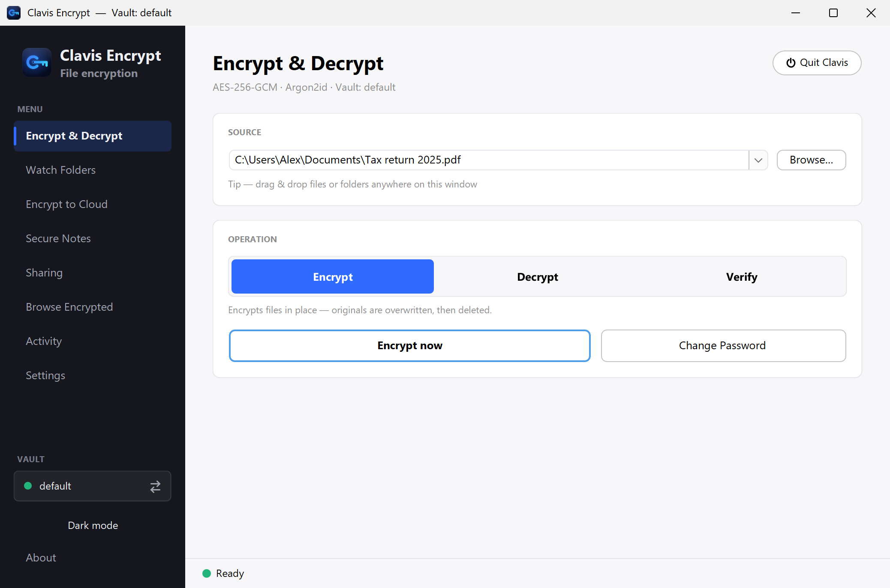

Why local encryption beats trusting the cloud
Cloud storage is genuinely useful — your files follow you to every device, they're backed up, and sharing is a link away. But there's a quiet trade you make: your private files now live on someone else's computers, under someone else's rules. Local encryption changes who's actually in control. And the good news is you don't have to choose one or the other.
What "it's in the cloud" really means
When you drop files into a mainstream cloud service, a few things are true even if nothing ever goes wrong:
- The provider usually holds the keys. Most consumer clouds encrypt files on their servers — but they hold the keys, which means they (and anyone who compels them) can read your files.
- Your files can be scanned. Automated systems inspect uploads for policy and legal reasons. Sometimes that flags innocent files.
- It's a giant target. A single breach of a big provider exposes millions of accounts at once. You inherit their risk.
- Your account can be locked. A wrong automated decision can cut you off from your own files, sometimes with little recourse.
- The terms can change. Pricing, features and policies shift, and your data is along for the ride.
The local-first difference
Encrypting files on your own PC flips the control back to you:
- Only you hold the key. Your password never leaves your machine. No provider — and nobody who leans on a provider — can open your files.
- It works offline. No account, no network needed to lock or unlock your data.
- You're not in the blast radius. There's no central pile of your plaintext for a breach to spill.
- Nothing to be locked out of. Your files sit on your disk; no company stands between you and them.
Being fair: the cloud isn't the enemy
Let's not pretend. The cloud earns its place: effortless sync across devices, automatic backup if your laptop dies, and easy sharing. Going purely local means you own the backup problem — if your only copy is on one drive and it fails, that's on you. So the honest answer isn't "never use the cloud." It's "don't hand the cloud your files in the clear."
The best of both: encrypt first, then sync
Here's the move that gives you convenience and control: encrypt files on your PC, then put the encrypted files in your cloud. The provider only ever sees scrambled data. You still get sync, backup and sharing — but your privacy no longer depends on trusting them.

Local vs cloud, at a glance
| Cloud (as-is) | Local encryption | Encrypt + sync | |
|---|---|---|---|
| Who holds the key | The provider | You | You |
| Provider can read files | Usually yes | No | No |
| Sync across devices | Yes | No | Yes |
| Automatic backup | Yes | Up to you | Yes |
| Works offline | Limited | Yes | Yes |
| Exposed in a provider breach | Yes | No | No (ciphertext only) |
Two things to keep in mind
- Use a strong password. When you hold the key, the password is everything. Make it long and unique.
- Keep your recovery key. The flip side of "only you can open it" is that losing your password locks you out too. Store the recovery key somewhere safe.
Local encryption isn't about fearing the cloud — it's about not outsourcing the one thing you shouldn't: the key to your own files. Clavis is built for exactly this, and the Security page shows how it works.